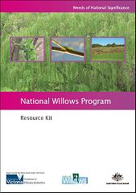
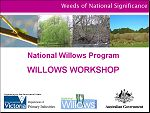

| The following 6 resource sheets together form the National Willows Program Resource Kit. The kit provides important information for managers on mapping, willow identification and the willow sawfly. |

|
This resource kit was developed through funding from the Australian Government's Defeating the Weeds Menace Program for a project titled 'Developing Willow Management Priorities from the Local to the National Level'. The priorities and distribution maps developed for each region and State/Territory through the mapping and weed risk assessment components of this project will be posted at this site by March 2008.

See Resource Sheet 1 for details on how you can become involved in this important project.
Resource sheet 1 - Developing Willow Management Priorities (pdf - 318kb)
Resource sheet 2 - Willow identification (pdf - 1740kb)
Resource sheet 3 - Willow Sawfly (pdf - 929kb)
Resource sheet 4 - Willow & Willow sawfly Assessment Form (pdf - 353kb)
Resource sheet 5 - Willow infestation classes (pdf - 4,879kb)
Fill out your mapping information electronically using this Excel spreadsheet (xls - 36kb)
Resource sheet 6 - Willow Impact & Management Survey (pdf - 359kb)
Workshops evaluation report (pdf - 7,638kb)
|
Workshop presentations |

|
National context, impacts, spread and mapping.ppt (ppt (Powerpoint) - 6,261kb)
Willow Identification: An essential skill for effective willow management
Parts 1 & 2 (ppt (Powerpoint) - 14,638kb)
Part 3 (ppt (Powerpoint) - 1,403kb)
Part 4 (ppt (Powerpoint) - 2,180kb)
Willow Sawfly (ppt (Powerpoint) - 5,427kb) |